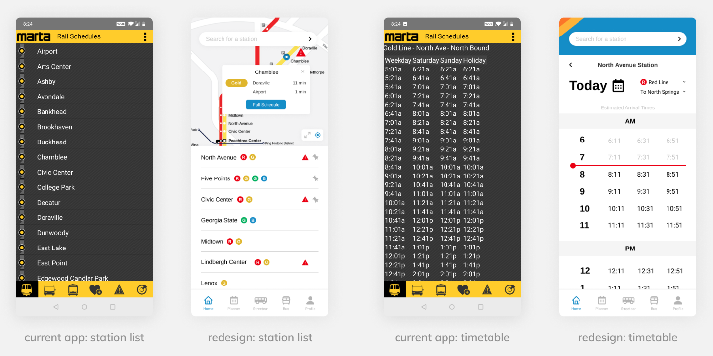
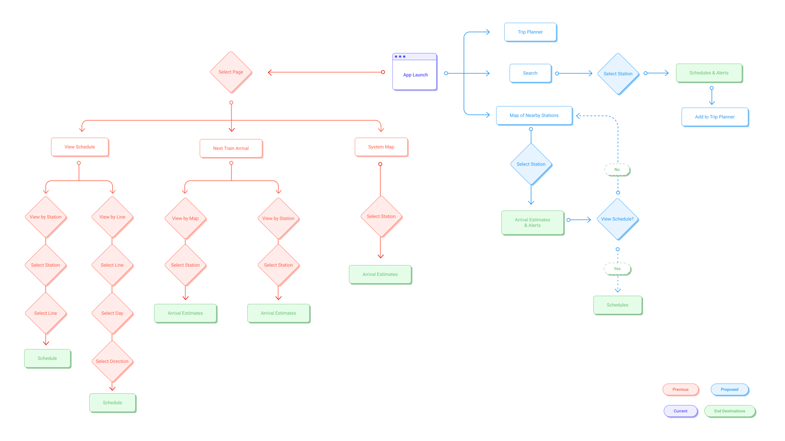
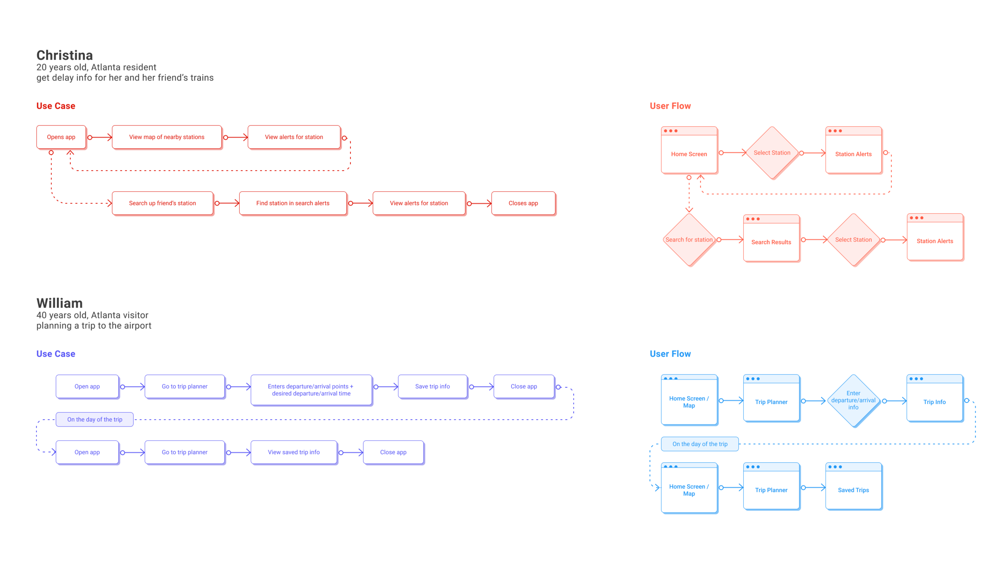
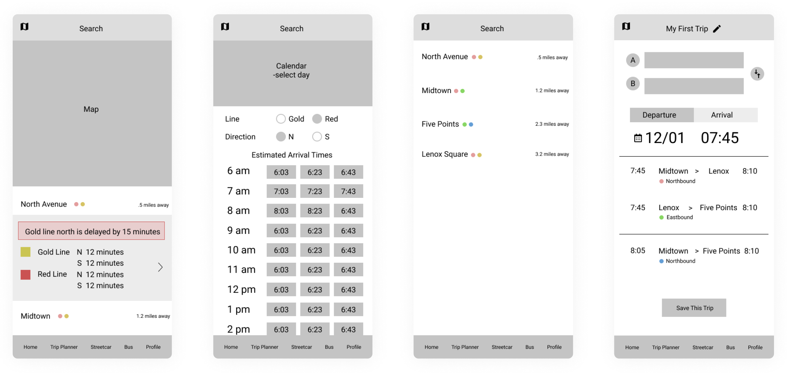
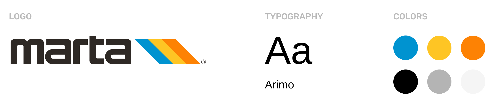
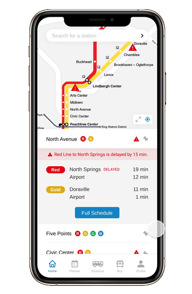
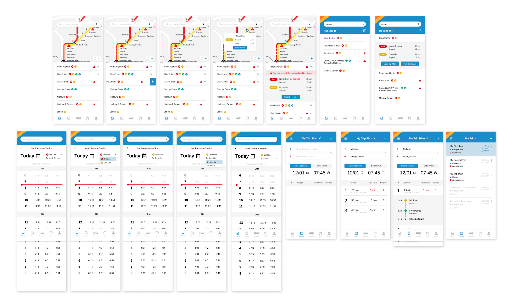

MARTA On the Go App Redesign
December 2022 - January 2023
The challenge: MARTA's app should enhance riders' trips without friction. However, with a 2 star rating in the App Store, the app receives complaints about its visual design and unreliability. My goal was to discover the current pain points when using MARTA’s rail system and find ways to support trips using the MARTA app.
The solution: By making main features of the app available within 2 clicks and adding a trip planner function, I redesigned the architecture and visual design of the MARTA app to make the experience more intuitive and accessible.
Role
UX Researcher, UX/UI Designer
01. Research
I first wanted to understand how MARTA riders generally plan trips: how they check rail schedules, what their current experience looks like, and how these things vary between different user groups. I conducted 30 minute interviews with eight people: four who use MARTA regularly and four Atlanta visitors who had only used MARTA once or twice. In the second half of the interview, I conducted some brief usability testing with MARTA's app to look into what's working and what's not. MARTA's vision is to "take people where they want to go today and tomorrow". I wanted to answer the question, is the current app supporting this vision?
Short answer: no. While my participants thought the information was extremely helpful, they all had negative comments on the lack of delay alerts, usability issues with the app, and struggles with planning trips.
- 
02. User Flows
With the current app design, users move through up to 5 different screens to get to the schedule function, one of the most commonly used features of the app. All these filtering screens make navigation self-explanatory. Each click is painless and clear, so what's the problem? The users are on the go. Being self-explanatory isn't enough for my users. Thus, my flows should be self-evident to preserve app navigation and increase efficiency. My proposal took these filtering screens and linearized it so that users can go anywhere in the app using a max of 2 screens without losing clarity.
- 
To simplify trip planning, I added a trip planner function. My interviewees planned by going back and forth between stations' schedules. This means even if the schedules were made easily accessible, it does not relieve the burden of sifting through these numbers. The trip planner function will calculate the best routes to take between stations based on estimated real time arrivals.
From my interviews, I found that regular MARTA passengers had much different needs from first-time MARTA passengers. Regular passengers needed quick access to real-time arrival information and delay alerts. First-time passengers needed guidance on how to plan and go through their trips. Thus, I created two user personas to ensure my flow was a comprehensive solution for both of these stakeholders.
- 
03. Wireframes
My user flows provided the bones of my design. To bring these frameworks to life, I developed low fidelity wireframes for four screens on the app: the home screen, schedules, search results, and trip planner.
- 
04. Visuals
To make the app as clean as possible, I decided on a simple, light-themed design, incorporating colors and shapes from MARTA's logo to help emphasize the branding.
- 
05. Final Solution
Increasing Accessibility: added a pin feature for frequent users and addressed the issue of hidden delays by adding an alert symbol.

Finding What You Need: search bar encourages regular app usage by making information quick and easy to find.

Improving Readability: cognitive overload is decreased by breaking up the schedule into a digestible format and adding line/direction filters.
- 
Removing Friction: trip planner simplifies planning by calculating trip duration times and possible routes while storing everyday routes for future reference.

- 
06. Reflection
Working on this project was a really great chance for me to practice redesigning an existing app. Many of my previous projects involved me designing something from scratch, so having the structure of the current MARTA app was both a benefit and a challenge. I had to spend some time looking at the current app, to find what features should be emphasized, what features needed to be hidden, and what features should be added or removed. Overall, I received really positive feedback with my designs. The users found it much easier to navigate around the app. The new visual design also made them excited to use it, and they found the trip planner very helpful, especially for saving routes. However, like any other design, there is always room to improve. And since I limited my scope to the rail system, this is by no means a comprehensive final solution to MARTA's entire app. I'd love to revisit this project when I have time and see how MARTA's experience can be improved even further. Here are some things I've been thinking about adding:
1. Conducting more in depth user testing with my current final screens. At a glance, users might love the aesthetics of the app, but to refine the experience even further, user testing is essential to finding gaps in its usability. Due to the timeline of the project, I moved onto the high fidelity screens too quickly. If I had conducted more user testing throughout the process, I think the final design solution would be much more elegant.
2. Integrating MARTA's bus and street car system. For timeline reasons, I limited my scope to the rail system. But the true MARTA experience is optimized when used with the bus routes. I'm curious to see how the available bus routes can be seen while viewing a rail station schedule, and how it can be incorporated in the trip planner as well.
3. Expanding the Trip Planner scope. Right now, it's limited to just station inputs. But the feature would be most useful if any address or location could be used instead.
4. Designing an onboarding process for regular MARTA users to enter their usual stations.